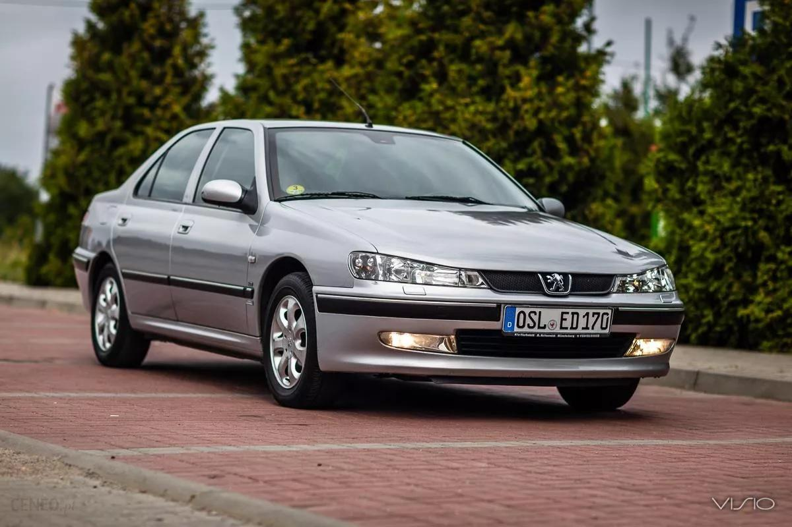

پژو 406 ، افسانه فرانسوی

خودرویی که به یک خاطره ماندگار تبدیل شد
پژو 406 یکی از موفقترین خودروهای تاریخ شرکت پژو است که با طراحی زیبا، خطوط بدنه هماهنگ و ظاهر جذاب خود توانست توجه علاقهمندان خودرو را در سراسر جهان جلب کند. این خودرو در زمان معرفی، ترکیبی از زیبایی، راحتی و کیفیت ساخت را ارائه داد و به همین دلیل خیلی زود به یکی از محبوبترین محصولات پژو شد. طراحی بدنه پژو ۴۰۶ با گذشت سالها همچنان جذاب و مدرن به نظر میرسد و بسیاری از علاقهمندان خودرو آن را یکی از زیباترین سدانهای دهه ۱۹۹۰ میدانند. استفاده از خطوط نرم و هماهنگ باعث شده است ظاهر این خودرو حتی امروز نیز قدیمی و از مد افتاده به نظر نرسد. پژو ۴۰۶ در بسیاری از کشورهای جهان با استقبال بسیار خوبی روبهرو شد و در نسخههای مختلف سدان، استیشن و کوپه تولید شد. نسخه کوپه این خودرو که طراحی آن با همکاری استودیوی مشهور Pininfarina انجام شد، یکی از زیباترین خودروهای کلاس خود به شمار میآید و هنوز هم طرفداران زیادی دارد. علاوه بر موفقیت در بازار، پژو ۴۰۶ در فیلمها و بازیهای ویدیویی نیز حضور داشته و به همین دلیل برای بسیاری از علاقهمندان خودرو، یک مدل خاطرهانگیز محسوب میشود. ترکیب طراحی چشمنواز، کیفیت مناسب و محبوبیت جهانی باعث شده است که این خودرو پس از گذشت سالها همچنان جایگاه ویژهای در میان دوستداران برند پژو داشته باشد. امروزه نیز پژو ۴۰۶ برای بسیاری از افراد تنها یک وسیله نقلیه نیست، بلکه نمادی از دوران طلایی طراحی خودروهای اروپایی و یکی از ماندگارترین محصولات تاریخ پژو به شمار میرود. .
ترکیبی از قدرت، اصالت و موفقیت
این خودرو در زمان عرضه به دلیل تعادل مناسب بین قدرت، راحتی و کیفیت رانندگی مورد توجه بسیاری از رانندگان قرار گرفت نسخههای مختلف پژو ۴۰۶ با موتورهای متنوع تولید شدند و برخی از مدلهای قدرتمند آن، بهویژه نسخههای V6، عملکرد قابل توجهی ارائه میکردند. همین موضوع باعث شد ۴۰۶ علاوه بر یک خودروی خانوادگی، برای رانندگی در جادههای طولانی نیز گزینهای محبوب باشد. پژو از تجربههای خود در دنیای مسابقات اتومبیلرانی برای توسعه فناوری و بهبود محصولاتش استفاده میکرد و این تجربهها در طراحی و مهندسی خودروهایی مانند ۴۰۶ نیز تأثیر داشت. هندلینگ مناسب، پایداری در پیچها و فرمانپذیری خوب از ویژگیهایی بودند که بسیاری از رانندگان آن را تحسین میکردند. یکی از مشهورترین نسخههای این خودرو، پژو ۴۰۶ کوپه بود که با همکاری شرکت ایتالیایی Pininfarina طراحی شد. این مدل به دلیل ظاهر زیبا و شخصیت اسپرت خود، هنوز هم یکی از محبوبترین خودروهای کلاسیک مدرن اروپا به شمار میرود. با وجود توقف تولید، پژو ۴۰۶ همچنان در میان علاقهمندان خودرو محبوب است و بسیاری آن را یکی از موفقترین محصولات تاریخ پژو میدانند. طراحی ماندگار، کیفیت مناسب و حس رانندگی دلنشین باعث شده است که این خودرو حتی پس از سالها نیز ارزش و جذابیت خود را حفظ کند.
موتور: 6 سیلندر
حجم موتور: 2000 تا (3 لیتری)2900 سیسی
قدرت: حدود 210 تا 300 اسب بخار
گیربکس: دستی(5 سرعته) و اتوماتیک
نهایت سرعت: 240 تا 260 کیلومتر برساعت
سال تولید همه مدل ها: 1995 تا 2004